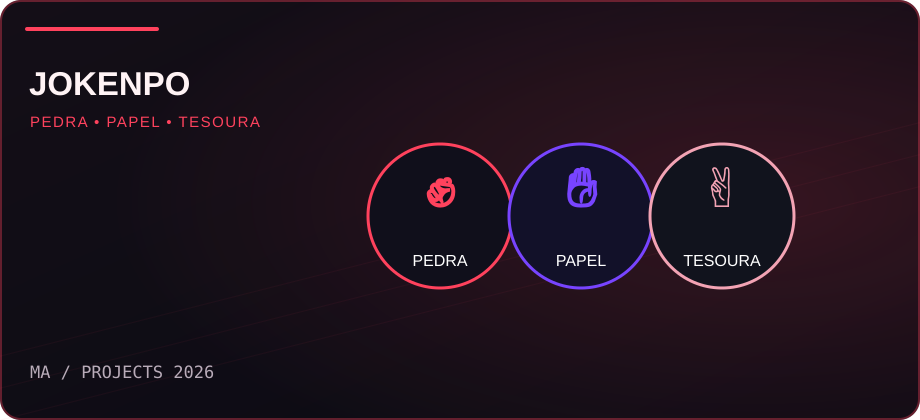
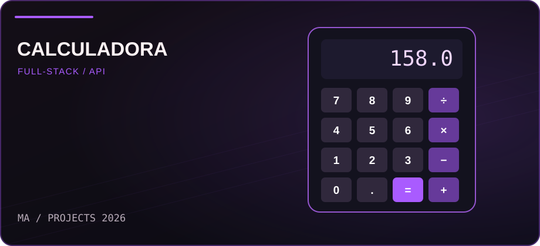
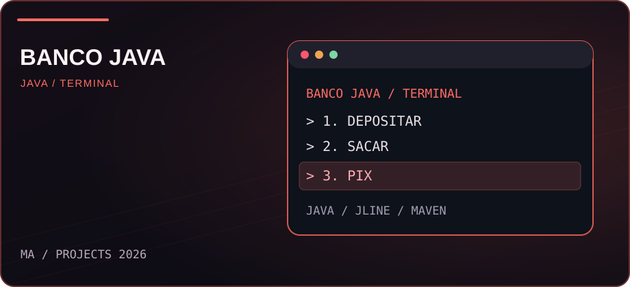
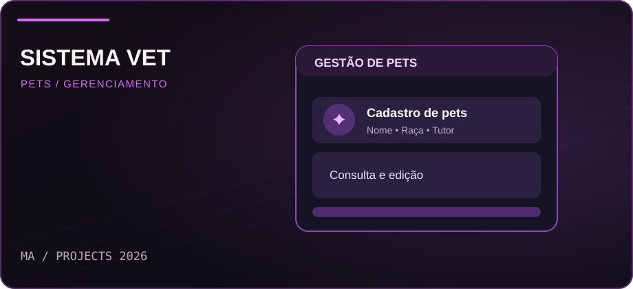

JoKenPo com API
Em evoluçãoPedra, papel e tesoura contra a CPU, com resultado processado por uma API Node.js.
Futuras atualizações: Multijogador
Jogar agora Olá, eu sou
Transformando estudos em projetos reais. Meu foco é aprender cada vez mais sobre lógica, APIs e desenvolvimento de sistemas para construir soluções que fazem sentido.
 MA / DEVELOPER
MA / DEVELOPER
const joken = ["pedra", "papel", "tesoura"];let escolhaJogador = null;let escolhaCPU = null;Sou um desenvolvedor em formação, apaixonado por tecnologia e por resolver problemas com código. Meu foco principal é o back-end, especialmente a construção de APIs e a lógica por trás dos sistemas.
Enquanto curso Análise e Desenvolvimento de Sistemas, sigo estudando e criando aplicações que me ajudam a colocar cada conceito em prática.
 HTMLEstrutura
HTMLEstrutura CSSEstilização
CSSEstilização JavaScriptLógica e DOM
JavaScriptLógica e DOM GitVersionamento
GitVersionamento JavaEm estudo
JavaEm estudoUNINTER · Ensino superior EAD
Formação concluída
Curso · 600 horas
Curso complementar
Alguns projetos que desenvolvi para colocar em prática o que venho aprendendo.

Pedra, papel e tesoura contra a CPU, com resultado processado por uma API Node.js.

Interface web integrada a uma API Express para realizar operações matemáticas.

Sistema bancário de terminal com login, depósitos, saques e transferências Pix fictícias.

Sistema web com cadastro, consulta, edição e exclusão de pets usando JavaScript.
Novas funcionalidades e melhorias que quero desenvolver.
Meu objetivo é evoluir o JoKenPo para permitir partidas entre pessoas, além do modo contra a CPU.
Estou sempre aberto a aprender, conversar sobre tecnologia e conhecer novas oportunidades.